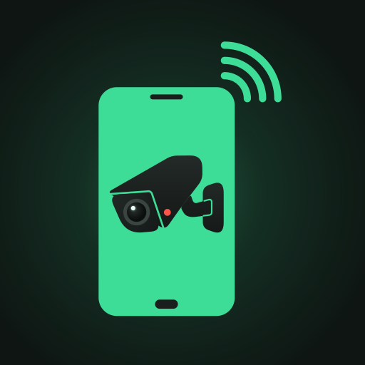
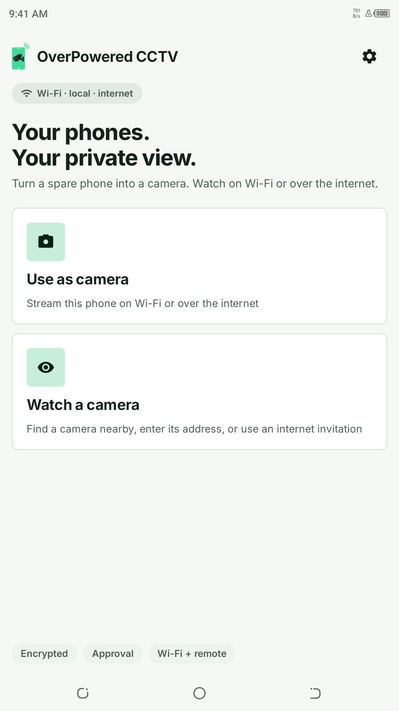
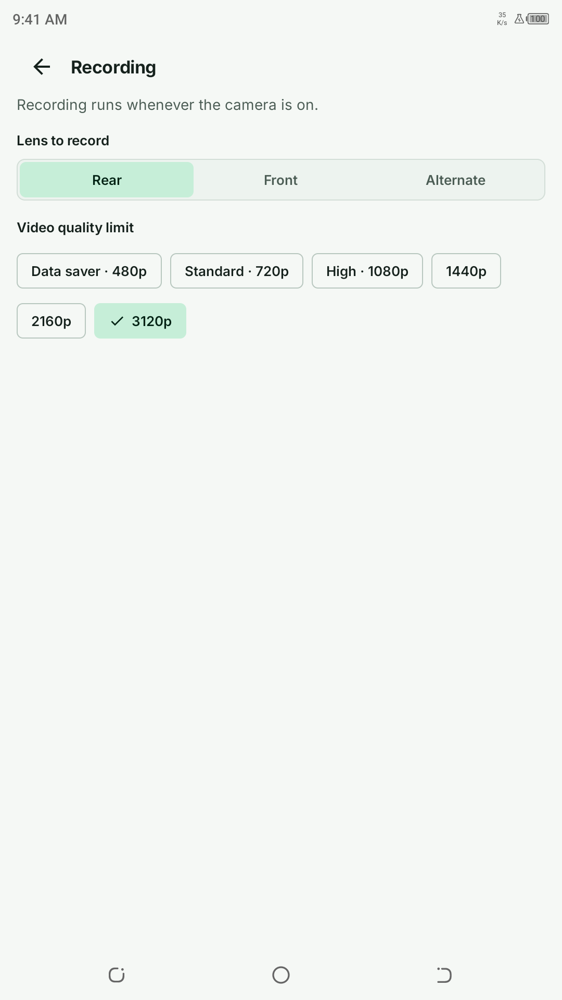
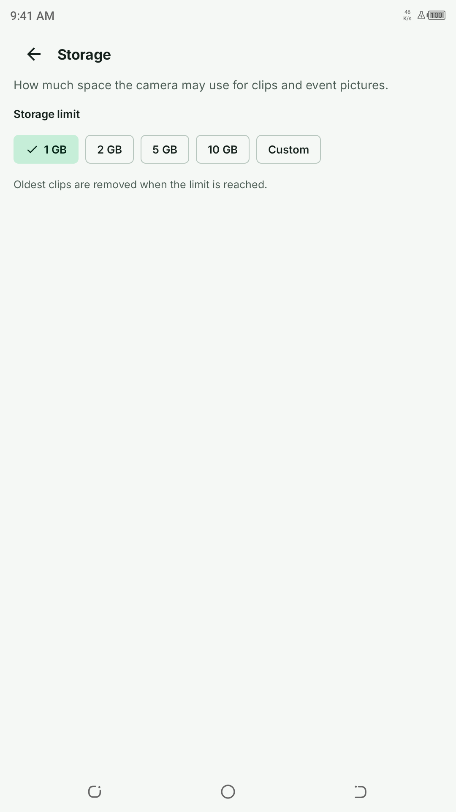
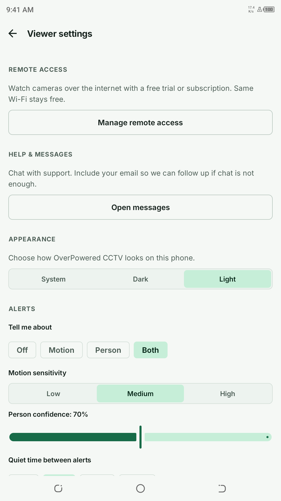

Watch. Listen. Take a closer look.
Live video and optional microphone audio, full-screen viewing and viewer zoom. Switch lenses, toggle the torch or adjust supported quality from an approved viewer.

OP CCTVBY OVERPOWERED Google PlayA NEW VIEW FOR YOUR SPARE PHONE
Give a spare Android phone a second life as a camera. Check in from another phone, on the same Wi-Fi or from away.
Android 7.0+ · Same app on both phones
Play availability depends on the release and your region.

The phone you already have.
A little more useful.
Close by.
Or a little further away.
No account or internet connection needed for same-network viewing.
Optional invitation-based remote viewing with a trial or subscription.
A CAMERA THAT'S STILL YOUR PHONE
From a quick check-in to a saved moment, keep the useful things within reach.
Live video and optional microphone audio, full-screen viewing and viewer zoom. Switch lenses, toggle the torch or adjust supported quality from an approved viewer.
Save screenshots and viewer recordings. Camera-side automatic clips stay on the camera phone, with a storage budget you control and a gallery for approved viewers.
Choose motion or human detection and receive snapshot alerts. Detection runs on the camera device. Background monitoring uses a visible notification.
Verify the camera fingerprint and approve new viewers on the camera phone. Add an optional PIN and revoke trusted devices when you need to.
A LOOK INSIDE
Real screens from OP CCTV on Android.
Light, clear and made for everyday use.



TWO PHONES. ONE SIMPLE START.
Start with both phones connected to the same Wi-Fi.
Install OP CCTV on both devices. On the spare phone, choose Use as camera, grant camera access and start capture.
Choose Watch a camera. Select the nearby camera or enter its displayed Wi-Fi address.
Compare the camera fingerprint, confirm it matches and approve the new viewer on the camera phone.
GOOD TO KNOW
Same-Wi-Fi viewing is free. Optional internet viewing uses a server-managed trial or Google Play subscription. Check the app and Google Play for current plans, prices and eligibility.
Camera clips are stored on the camera phone and managed within its chosen storage budget. Viewer recordings and screenshots are saved on the viewer phone. Approved viewers can browse and save completed camera clips.
After you explicitly start it, the camera can keep running in the background or while locked, with a persistent notification. After force-stop, process death or reboot, open the app and start it again. Phone power management and network conditions can affect operation.
Two Android devices running Android 7.0 or later, with OP CCTV installed on both. Start on the same Wi-Fi for local viewing. Remote viewing needs internet access and an invitation. Camera controls and performance depend on your hardware and network.